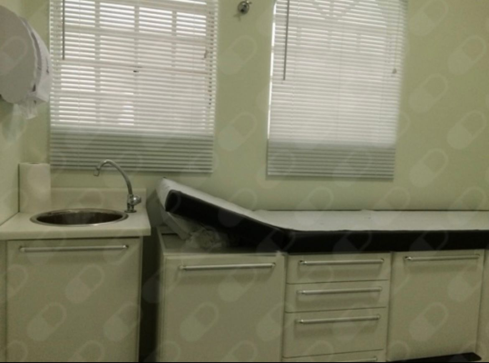
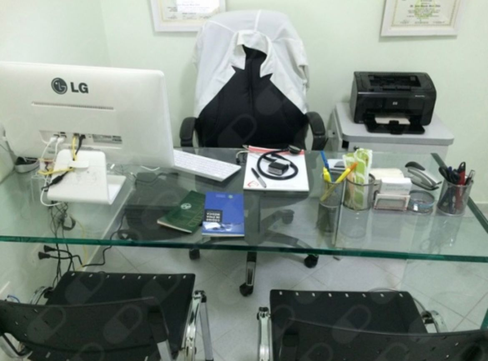
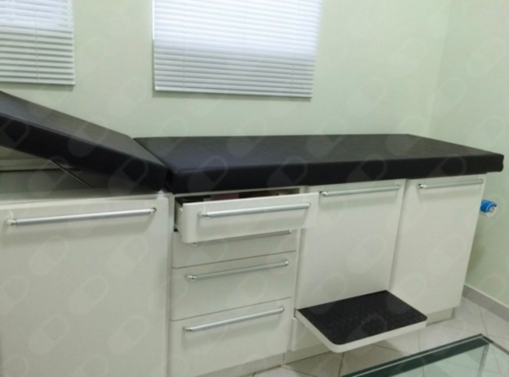
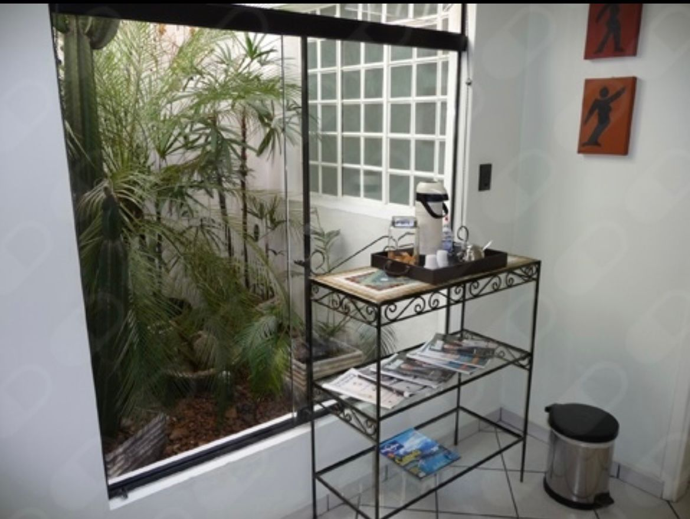
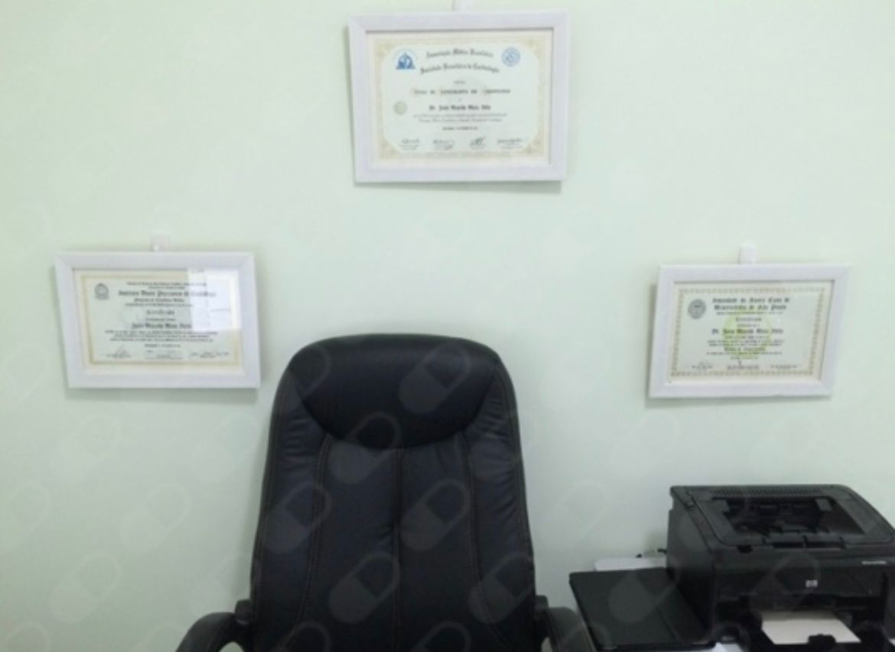
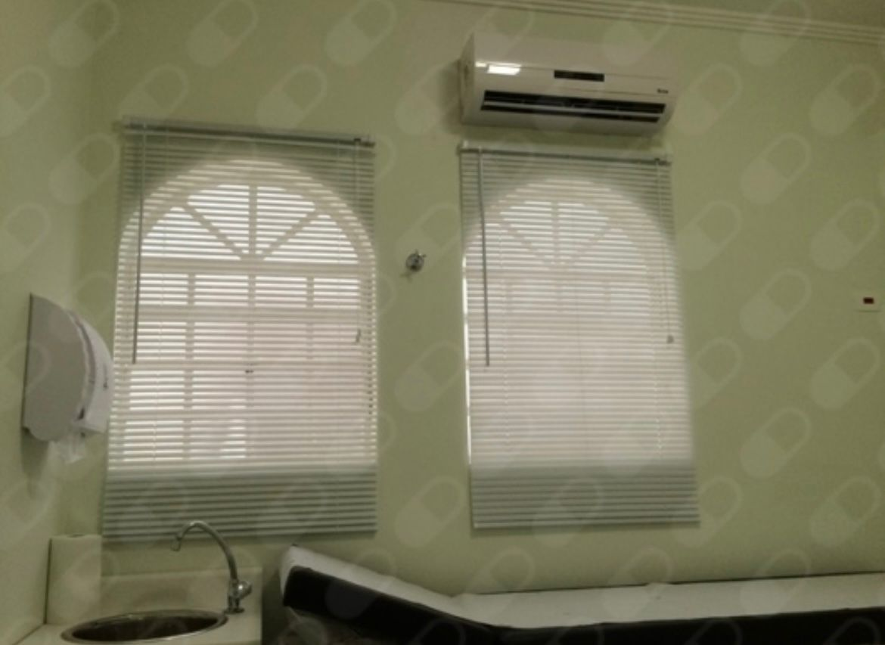
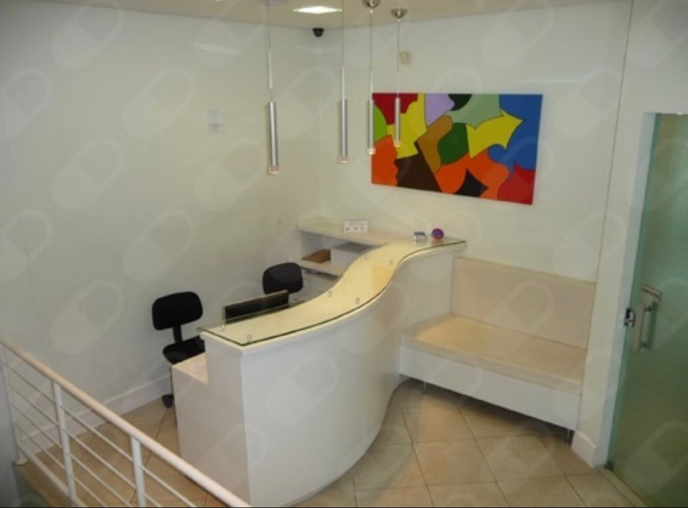

Dr. Jairo Maia
Cardiologia & Clínica Médica
Cardiologia & Clínica Médica
CRM 105435 / RQE 4469
Medicina de excelência para quem busca um médico de referência em São Paulo e grande ABC.
Atendimento Integral e Humanizado.
MARQUE SUA CONSULTA

Doutor Jairo Maia é médico cardiologista com especialidade em cardiologia e clínica médica,
formado há mais de 25 anos, com atuação há mais de 20 anos em terapia intensiva e
consultório.
Natural de Salvador/Bahia, formado em medicina na Universidade Federal da Bahia (UFBA) em 2001,
mudou-se para São Paulo em 2003 onde fez Residência e Especialização em Clínica Médica na
Santa Casa de Misericórdia de São Paulo (2003-2005) e Cardiologia no Instituto Dante Pazzanese
de Cardiologia (2005-2007).
Visite nosso consultório em Santo André - SP à 50m da Drogaria São Paulo.







Não. Os atendimentos são particulares.
Atendimento de pacientes a partir de 14 anos.
Oriento trazer todos os exames mais recentes assim como as medicações em uso.
Sim. Há estacionamento próprio. E há um estacionamento pago logo à frente.
Não. Atendimento apenas presencial.
Contato sempre pessoalmente, via WhatsApp, até para agendamento de consultas. Todo contato é diretamente comigo.
Não há tempo de consulta. Mas em média, cerca de 1 hora.